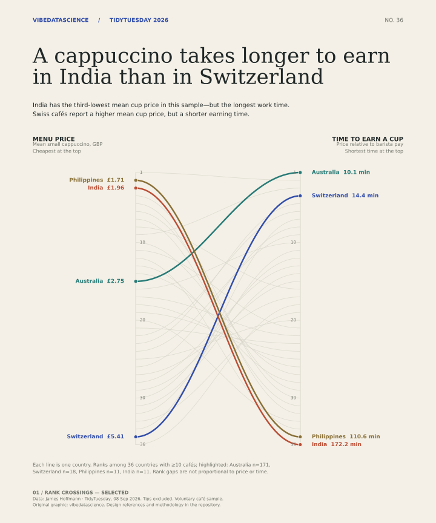
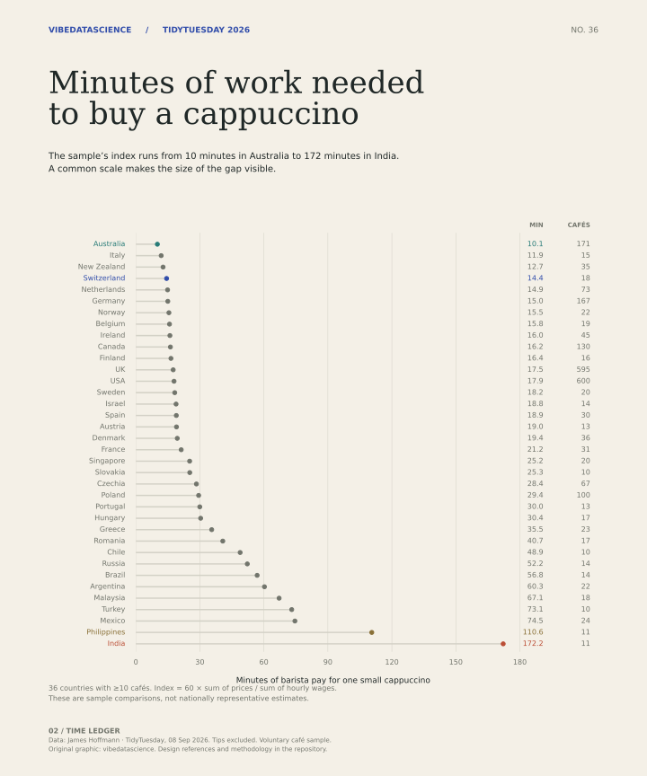
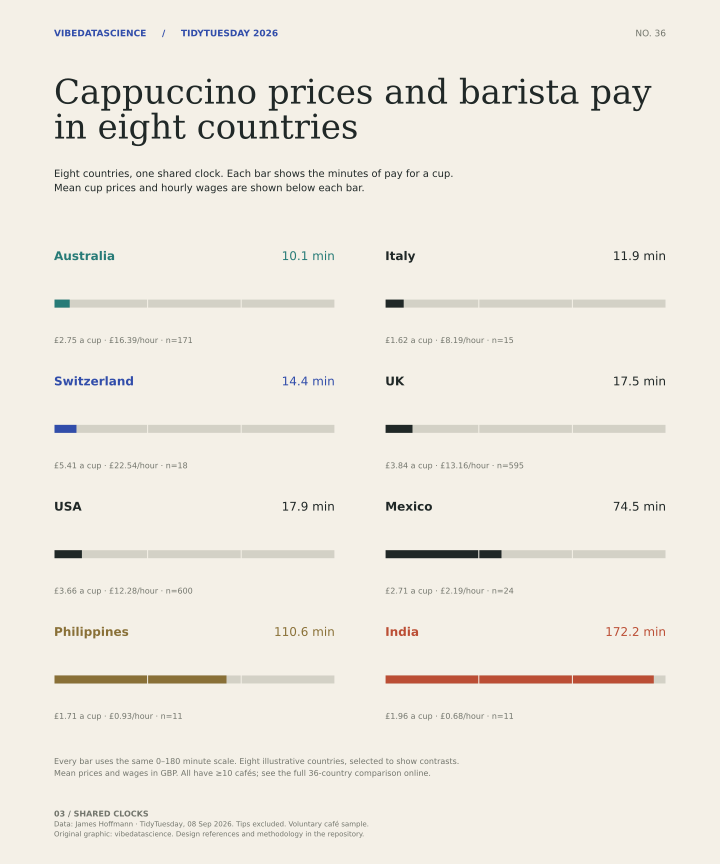

{kind=link}
{kind=link}
01 / Selected
Rank crossings
Best for the story: the reversal between menu price and earning time is visible at a glance. Ranks show order; the table gives the actual amounts.
Download PNG ↓Edition 01 / Week 36 / 08 September 2026
In the sampled cafés, a cappuccino costs £1.96 on average in India and £5.41 in Switzerland. Relative to reported barista pay, it takes 172 minutes to earn in India and 14 minutes in Switzerland.

Compare the alternatives.
01 / Selected
Best for the story: the reversal between menu price and earning time is visible at a glance. Ranks show order; the table gives the actual amounts.
Download PNG ↓
02 / Alternative
Best for comparing exact magnitudes. A single linear scale shows the gap across all 36 countries, but loses the price-versus-pay reversal.
Download PNG ↓
03 / Alternative
Best for a quick read. Eight country panels pair the price with the time; easier to scan, but less complete than the full comparison.
Download PNG ↓All 36 countries shown in the chart. Prices and wages are means in GBP; the index uses their ratio.
| Country | Cup price | Hourly pay | Minutes / cup | Cafés |
|---|---|---|---|---|
| Australia | £2.75 | £16.39 | 10.1 | 171 |
| Italy | £1.62 | £8.19 | 11.9 | 15 |
| New Zealand | £2.51 | £11.79 | 12.7 | 35 |
| Switzerland | £5.41 | £22.54 | 14.4 | 18 |
| Netherlands | £3.42 | £13.82 | 14.9 | 73 |
| Germany | £3.35 | £13.44 | 15.0 | 167 |
| Norway | £4.23 | £16.39 | 15.5 | 22 |
| Belgium | £3.55 | £13.50 | 15.8 | 19 |
| Ireland | £3.44 | £12.95 | 16.0 | 45 |
| Canada | £2.77 | £10.26 | 16.2 | 130 |
| Finland | £4.02 | £14.67 | 16.4 | 16 |
| UK | £3.84 | £13.16 | 17.5 | 595 |
| USA | £3.66 | £12.28 | 17.9 | 600 |
| Sweden | £3.88 | £12.79 | 18.2 | 20 |
| Israel | £3.69 | £11.76 | 18.8 | 14 |
| Spain | £2.42 | £7.68 | 18.9 | 30 |
| Austria | £3.56 | £11.21 | 19.0 | 13 |
| Denmark | £5.41 | £16.74 | 19.4 | 36 |
| France | £4.11 | £11.61 | 21.2 | 31 |
| Singapore | £3.45 | £8.21 | 25.2 | 20 |
| Slovakia | £2.70 | £6.42 | 25.3 | 10 |
| Czechia | £2.79 | £5.90 | 28.4 | 67 |
| Poland | £3.18 | £6.48 | 29.4 | 100 |
| Portugal | £2.89 | £5.78 | 30.0 | 13 |
| Hungary | £2.89 | £5.70 | 30.4 | 17 |
| Greece | £2.74 | £4.63 | 35.5 | 23 |
| Romania | £2.54 | £3.74 | 40.7 | 17 |
| Chile | £2.73 | £3.36 | 48.9 | 10 |
| Russia | £2.38 | £2.74 | 52.2 | 14 |
| Brazil | £2.15 | £2.27 | 56.8 | 14 |
| Argentina | £2.40 | £2.39 | 60.3 | 22 |
| Malaysia | £2.33 | £2.08 | 67.1 | 18 |
| Turkey | £3.06 | £2.51 | 73.1 | 10 |
| Mexico | £2.71 | £2.19 | 74.5 | 24 |
| Philippines | £1.71 | £0.93 | 110.6 | 11 |
| India | £1.96 | £0.68 | 172.2 | 11 |
36 of 36 countries
Minutes = 60 × sum(cup prices) ÷ sum(hourly wages)
This reproduces the published Cappuccino Index. It is a ratio of country-level sums, not the average of individual cafés’ price-to-wage ratios. All 36 results were checked against the published values.
The full dataset has 2,594 cafés across 87 countries. This edition uses the 36 countries with at least 10 responses. The input prices and wages were positive and complete. Tips are excluded, which matters when comparing pay.
Ranks use unrounded values; display values are rounded. GBP conversion makes menu prices comparable in one currency, but is not a purchasing-power adjustment. No national estimates or confidence intervals are claimed.
Data: TidyTuesday, 8 September 2026, curated by Filip Reierson from James Hoffmann’s Cappuccino Index.
Nicola Rennie’s earlier work provided useful design signals. These charts use new code, a new palette, and this week’s data.
The rank comparison is our editorial choice for this story. The alternatives remain available so you can judge that choice. References: Nicola Rennie, nrennie/tidytuesday (CC BY 4.0).
{kind=link}
{kind=link}
{kind=link}
{kind=link}